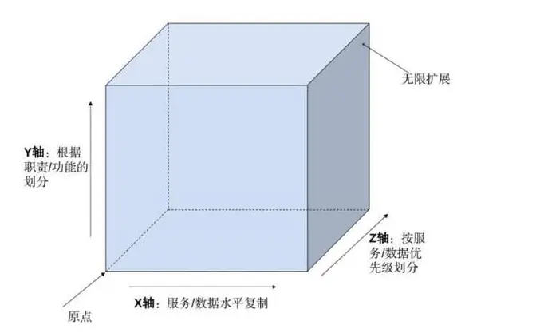
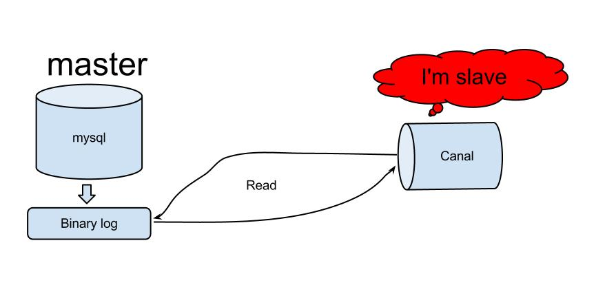

扩展性的几个方面
扩展性的几个方面
架构扩展性
AKF扩展立方体（Scalability Cube）

1. X：服务，数据的水平复制（数据副本），多实例部署；
弹性扩容伸缩 性能规划 业务解耦 部署复杂度增加
2. Y：按功能、服务或资源划分。
3. Z: 根据(数据)逻辑划分划.
分开处理数据（子集） 提高资源利用率 提高业务可伸缩性 改进故障隔离 业务解偶 有状态服务 增加复杂度**
应用扩展性
- X
- 无状态应用，多节点克隆复制。
- 容器技术快速复制（比如Docker）
- 负载均衡器，控制业务负载流向（比如Nginx,F5,SpringCloud Rabbion,Feign）
- 有状态应用，状态分离（比如会话存储（ cookie 存储 token ，Redis ，Session），文件存储 无状态（FastDFS），日志无状态（日志标准输出，监控服务））
- Y
- （微）前端
- 后端（子系统，模块，聚合化分，微服务化）
- Z
- 业务ID分割
- 地理位置分割，单元化
- 产品ID SPU，SKU
数据扩展性
X:
- 读写分离
- 多副本
缓层读取
CAP最终一致性 CDC复制 数据高可用
Y：
- 配合应用Y扩展
- 每个子系统，微服务独立数据库；数据群集
- 康威定律
Z：
- Key分表：ID SPU，SKU，Hash 取模
分库分表（MyCat ShardingSphere）
加速查询 业务解偶 X（副本）Z（分片）
编码扩展性
- 插件编程
- SPI
组织扩展性
- 披萨组织
- 目标一致- >吃披萨
- 贝索斯推荐：6～12
- 配合应用和数据的Y轴
- 可扩展责任矩阵（RASCI）
- 目标一致- >吃披萨
流程扩展性
- ITI L
- ITSM
- 6西格码
- Devops
- JAD 联合架构设计
- ARB 架构评审会
- OKR
- SMART
实现方案
- 分布式架构设计
- 复制
- 应用无状态 容器化
- 数据多副本，读写分离，冷热备份
- 中间件，最终一致性
- CDC 技术（canal）
 - 服务拆分（微服务架构）
- 需求驱动（业务关联性，流程边界）
- 用户群体
- DDD领域驱动（值对象，实体，聚合，聚合根，模块，界限上下午，领域（子域，核心域，通用域，支撑域））
- 事件风暴 event storming
- 服务发现，服务治理，负载均衡，链路追踪,监控
- SpringCloud
- 负载均衡（客户端Ribbon/Feign，服务端Nginx ，K8S Service ,ESB, API Gateway）
- 数据分片，分库分表（Sharding jdbc Spanner,MyCat,Aurora）
本博客所有文章除特别声明外，均采用 CC BY-NC-SA 4.0 许可协议。转载请注明来自 跟着Byte学架构！